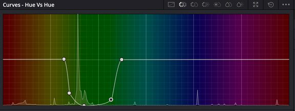
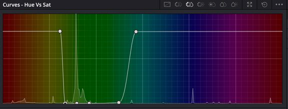
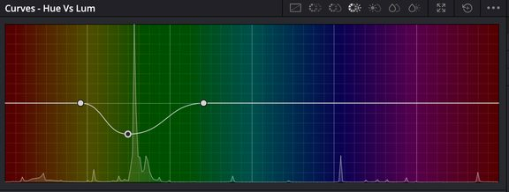
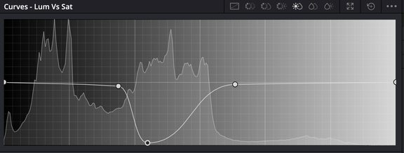

Beat It
A group video project about image processing with shadows. We recreated a choreography inspired by Michael Jackson's “Beat It”, using shadows as the main visual element, and processed the footage with image-processing algorithms and colour work.
the idea
Recreate a choreography inspired by “Beat It” and make shadows the main visual element of the video.
the process
Custom Python & OpenCV algorithms for frame effects, followed by chroma keying, grading, and montage in DaVinci Resolve.
the result
A video that combines artistic expression with the technical concepts of the course, showing that image processing can also create new ways of representing a scene.
Image Processing
Effect 01 Chroma Key & Background Processing
Replacing the green screen studio background while retaining and adjusting actor shadows for a realistic composition before applying effects.
Effect 02 Silhouette
Generates a binary silhouette of the person or shadow in the image. Otsu's thresholding separates the object from the background automatically, and the colours are inverted so the shadow turns white and the background black. Morphological opening and closing then remove small artifacts and fill holes, giving a cleaner, more uniform silhouette.
def silueta(f):
_, m = cv2.threshold(gris(f), 0, 255, cv2.THRESH_BINARY_INV + cv2.THRESH_OTSU)
k = cv2.getStructuringElement(cv2.MORPH_ELLIPSE, (5,5))
m = cv2.morphologyEx(m, cv2.MORPH_OPEN, k, iterations=1) # quita pequeños puntos
m = cv2.morphologyEx(m, cv2.MORPH_CLOSE, k, iterations=2) # rellena huecos internos
return cv2.cvtColor(m, cv2.COLOR_GRAY2BGR)Effect 03 Morphological Gradient
Gets the outline of the silhouette. After segmenting the image like the silhouette effect, it computes the difference between dilation and erosion, which highlights only the edges of the object. The result is shown with the outlines coloured red.
def gradiente(f):
_, m = cv2.threshold(gris(f), 0, 255, cv2.THRESH_BINARY_INV + cv2.THRESH_OTSU)
k = cv2.getStructuringElement(cv2.MORPH_ELLIPSE, (7,7))
g = cv2.morphologyEx(m, cv2.MORPH_GRADIENT, k)
r = np.zeros_like(f)
r[:,:,2] = g # meto el resultado en el canal rojo
return rEffect 04 Negative
Inverts the values of every pixel, like a photographic negative. Light areas become dark and vice versa.
def negativo(f):
return cv2.bitwise_not(f)Post-Production in DaVinci Resolve
In DaVinci Resolve I turned the original green background into a neutral grey environment and adjusted the overall look of the video. Four curves control the background: they even out the green, remove its intensity, darken it and clean the noise in the dark areas.

Hue vs Hue: Evens out the tone of the original green.

Hue vs Sat: Removes the intensity of the green background.

Hue vs Lum: Lowers brightness to dark grey.

Lum vs Sat: Cleans visual noise in dark areas.
Shadows & Final Adjustments
A white outline, created with Lum vs Sat, highlights the silhouettes and the dance. The colour and contrast of the whole image are adjusted so everything has more impact, and fades between clips keep the cuts from being abrupt.